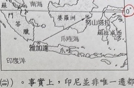
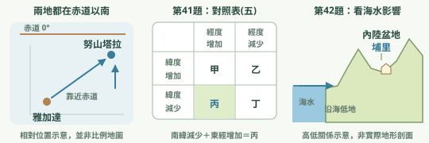
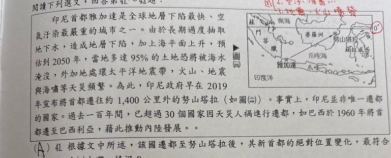
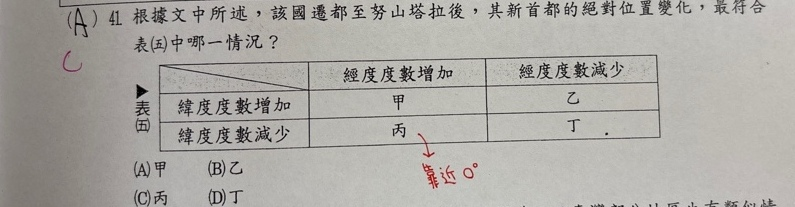
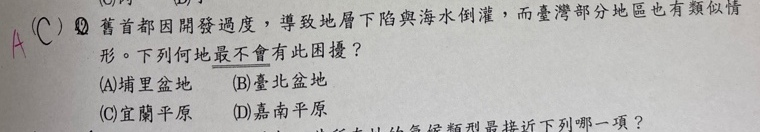

分享原卷｜共文第41～42題
完整原題
作答所需文章／材料
印尼首都雅加達是全球地層下陷最快、空氣汙染最嚴重的城市之一。由於長期過度抽取地下水，造成地層下陷，加上海平面上升，預估到2050年，當地多達95%的土地恐將被海水淹沒，外加地處環太平洋地震帶，火山、地震與海嘯等天災頻繁。為此，印尼政府早在2019年宣布將首都遷往約1,400公里外的努山塔拉（如圖(三)）。事實上，印尼並非唯一遷都的國家。過去一百年間，已超過30個國家因天災人禍進行遷都，如巴西於1960年將首都遷至巴西利亞，藉此推動內陸發展。| 經度度數增加 | 經度度數減少 | |
|---|---|---|
| 緯度度數增加 | 甲 | 乙 |
| 緯度度數減少 | 丙 | 丁 |

先想一想，再查看答案、解說與原圖
【第42題】正確答案：A。埔里盆地位於中部內陸，地勢較高、遠離海岸，最不容易有本題所問海水倒灌的困擾。
詳細說明與解題步驟
【第41題詳解】
先看圖中兩地都在赤道以南：往北靠近赤道，不是南緯度數增加，而是南緯數字減少。再看東西位置，努山塔拉在雅加達東方，兩地均為東經，因此經度數字增加。依表格找到「緯度減少＋經度增加」的丙，選C。此處比較度數大小，不能把向北一律記成緯度數字增加。
【A】甲表示緯度、經度度數都增加，不合新地點向赤道靠近。
【B】乙表示緯度增加、經度減少，與圖上的移動均不合。
【C】丙表示緯度度數減少、經度度數增加；新地點較靠近赤道且在較東方，符合圖示。
【D】丁表示兩者度數皆減少，但新地點向東移，東經度數應增加。
【第42題詳解】
題目把「地層下陷與海水倒灌」放在一起，四地比較的關鍵是是否鄰近海岸、是否為低地。埔里盆地位於南投內陸，最能排除海水倒灌，選A。原AI將地層下陷本身的必要條件也說成「地下水超抽＋臨海低窪」，應釐清：內陸也可能地層下陷；臨海低窪是判斷海水倒灌風險的重要條件，不能說所有地層下陷都必須靠海。
【A】埔里盆地位於中部內陸，地勢較高、遠離海岸，最不容易有本題所問海水倒灌的困擾。
【B】臺北盆地較低且與河口海岸相通，和內陸埔里相比，不是最能排除海水影響者。
【C】宜蘭平原臨太平洋，低地與海岸相接，不能像埔里一樣以遠離海岸排除。
【D】嘉南平原有沿海低地，部分地區另有地下水超抽及地層下陷問題，並非最不受海水倒灌影響的選項。

① 第41題：往北，南緯度數反而小
依原圖，雅加達與努山塔拉都在赤道以南。新地點向北靠近赤道，南緯度數減少；又向東移，東經度數增加。
② 第41題：緯減、經增，對應丙
表(五)比較的是度數增減：找到緯度減少那列，再找經度增加那欄，交會處是丙，選C。不能把向北一律記成緯度數字增加。
③ 第42題：內陸較高，不易海水倒灌
埔里盆地在內陸、遠離海岸，最能排除這題的海水影響，選A。注意：內陸也可能地層下陷，不能把臨海說成所有下陷的必要條件。
④ 南緯要看距赤道，倒灌要看離海多遠
第41題 C（丙）；第42題 A（埔里盆地）
- 41：兩地同為南緯，靠近赤道是度數減少。
- 41：同為東經，向東是度數增加。
- 42：埔里較高且內陸，最不易受海水倒灌。
- 下陷與倒灌要分清，不能說下陷必須臨海。
核對註記：已實看原卷題幹、選項與作答必要材料；無可核對康軒冊次章節證據，歸綜合。題內時事數據保留原題情境，不冒充今日統計。
原圖（僅本題）


